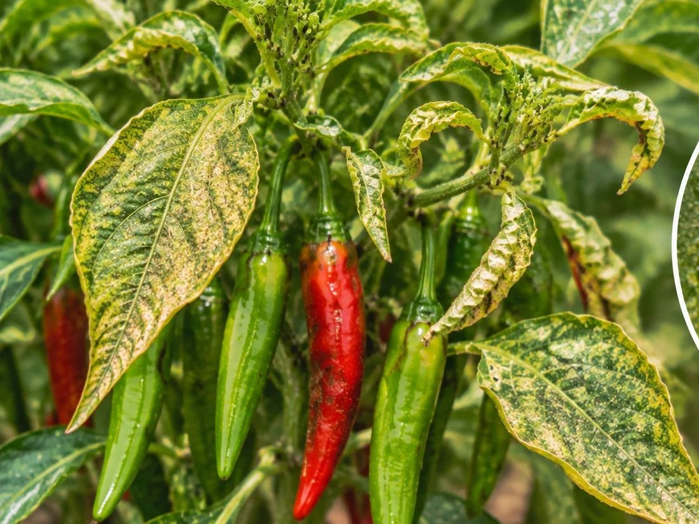

Selamat pagi. Saya siap membantu soal tanam dan rawat. Mau mulai dari mana?
Jam berapa sebaiknya siram cabai yang sedang berbunga?
Untuk cabai rawit di fase berbunga, siram pagi pukul 06.00–08.00 sekitar 300 ml per polibag, langsung ke pangkal batang. Siram sore hanya jika tanah terasa kering saat dicek 2 ruas jari. Hindari siang — tetes air pada bunga saat terik bisa memicu bunga rontok.
Sudah diatur: siram cabai setiap hari pukul 06.30Lihat jadwal

Daunnya ada yang menggulung ke atas, kenapa ya?
Daun menggulung ke atas dengan bercak keperakan biasanya tanda thrips. Coba langkah ini:
Balik daun dan cek serangga kecil memanjang di bagian bawah.
Pasang perangkap kuning di dekat polibag.
Semprot pestisida nabati sore hari, ulangi 3 hari sekali.